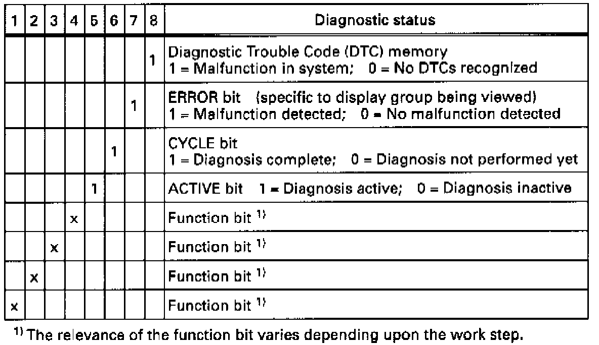
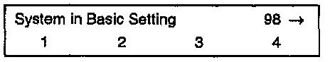
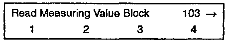
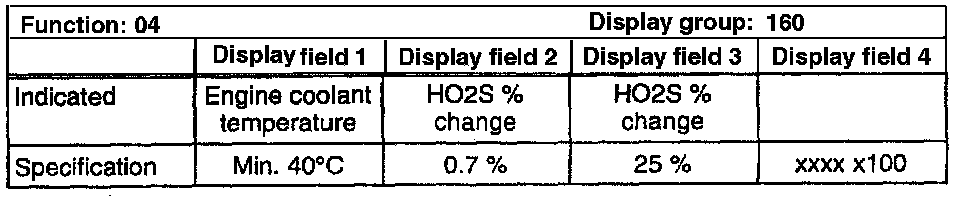
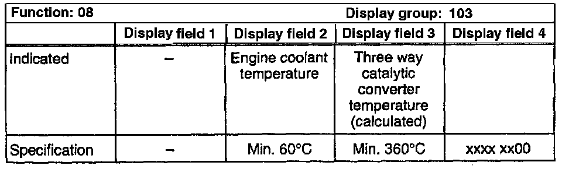

Readiness Code, Creating
- Study following chart. Pay special attention to bits 5, 6, 7 and 8.
NOTE:
- An "x" in the diagnostic status table specification means the display can be either 0 or 1.
- If a particular bit that you are watching in the Readiness code is obtained sooner than the time specified in the chart, you can immediately proceed to the next work step.
NOTE:
- There must not be a malfunction stored in DTC memory and there must be no malfunctions detected during diagnosis.
- During the test sequence the ignition must not be switched off.
Special tools, testers and auxiliary items:
- VAG 1551/1552 scan tool with VAG 1551/3 adapter cable.
Test sequence
- Connect VAG 1551/1552 Scan Tool (with ignition switched ON) and select address word 01. Connecting and Selecting "Engine Electronics" address word 01
Work step: 1

Indicated on display
- Press buttons -0- and -2-to select "Interrogate DTC Memory"function 02 and press -Q- button to confirm input

The number of malfunctions stored or "No DTC recognized" will be shown on the display.
- Press -> button.
Work step: 2
Indicated on display
- Press buttons -0- and -5-to select "Erase DTC Memory" function 05 and press -Q- button to confirm input.

Indicated on display
- Press -> button.
Work step: 3
Diagnosis: To check throttle body adaptation

Indicated on display
- Switch ON ignition but do NOT start engine.
- Press buttons -0- and -4- to select "Basic Setting" function 04 and press -Q- button to confirm input.
Indicated on display
- Press buttons -0-, -9- and -8- to input display group 098 and press -Q- button to confirm input.

Indicated on display: (1-4 = Display fields)
- Check the specifications in display fields 3 and 4.

- Press -> button.
Work step: 4
- Start engine and let Idle.
Work step: 5
Diagnosis: Leak diagnosis for tank venting system.
NOTE:
Not all vehicles have this system installed. If this system is not found on the vehicle you are working with; skip This work step.

Indicated on display
- Press buttons -0-and -4- to select "Basic Setting" function 04 and press -Q- button to confirm input.

Indicated on display
- Press buttons -1-, -5- and -3-to input display group 153 and press -Q- button to confirm input.

Indicated on display: (1-4 = Display fields)
- Run engine at idle and check specifications after 60 seconds.

- Press -> button
Work step: 6
Diagnosis: Engine warm-up.
- Press buttons -0- and -8-to select "Read Measuring Value Block" function 08 and press -Q- button to confirm input.
Indicated on display
- Press buttons -1-, -0- and -3- to input display group 103 and press -Q- button to confirm input.

Indicated on display: (1-4 = Display fields)
- Increase engine speed to 3000-3500 RPM and check specifications after 60 seconds.

- Press -> button.
Work Step: 7
Diagnosis: Secondary Air Injection system.
NOTE:
Not all vehicles have this system installed. If this system is not found on The vehicle you are working with; skip this work step.
- Vehicle stationary
Indicated on display
- Press buttons -0-and -4- to select "Basic Setting" function 04 and press -Q- button to confirm input.

Indicated on display
- Press buttons -1 -, -6- and -0- to input display group 160 and press -Q- button to confirm input.

Indicated on display: (1-4 = Display fields)
- Start engine and let idle, check specifications after 20 seconds.

- Press -> button
Work step: 8
Diagnosis: Engine warm-up continued (calculated temperature of Three Way Catalytic converter).

Indicated on display
- Press buttons -0- and -8-to select "Read Measuring Value Block" function 08 and press -Q- button to confirm input.

Indicated on display
- Press buttons -1-, -0-and -3-to input display group 103 and press -Q- button to confirm input.

Indicated on display: (1-4 = Display fields)
- Increase engine speed to 2200-3300 RPM and wait until catalyst temperature (field 3) reaches specification.

- Press -> button.
Work step: 9
Diagnosis: HO2S aging (regulating frequency extended).

Indicated on display
- Press buttons -0- and -4- to select "Basic Setting" function 04 and press -Q-.